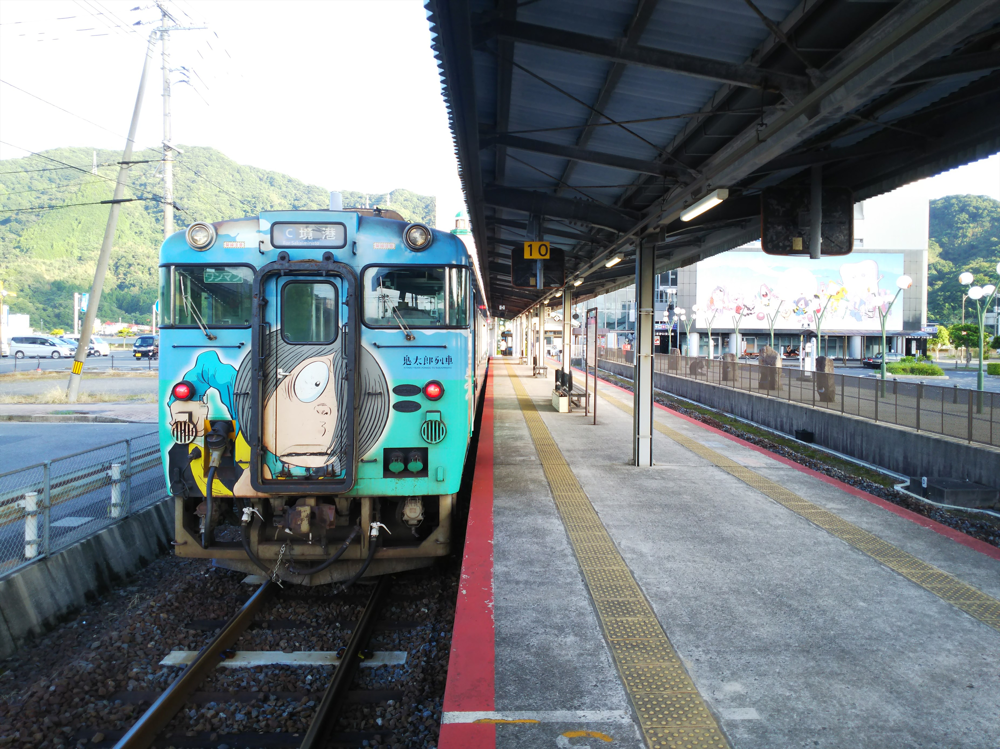

引っ越しの片づけもろくすっぽ終わってないっちゅーのに、我慢できずに旅に出てしまいました・・・
夜明け前の米子駅。迷走台風のおかげで直前までほ
とんど中止覚悟でしたが、最後の最後、バスは動く
ということで夜行バスでやってきました。
始発まで、駅前のベンチでひと休み。
そろそろ時間になってきました。
新型やくも運行にあわせて出来た駅名標。雲の形っ
すね。
境港線。相変わらずの鬼太郎ずくめです。
シートにまでデザインされてるとは！

境港到着。台風一過か、天気はいいですね。
連絡バスにのって七類港へ。
フェリーが見えてきました。
なかなか近代的なフェリーターミナルです。
切符は珍しく「硬券」でした。
「チッキ」って！！まだこんな言葉が残ってたんですね。もちろん、
何のことか、皆様ならお判りになると思ってます。
七類港出航。湾状になったきれいな港です。
隠岐諸島が見えてきました。
島後に到着。この西郷港が隠岐諸島の中で一番大き
い港です。
思ってたよりデカいフェリーでした。
フェリーターミナルでママチャリをレンタルします。
西郷港周辺を散策。 川沿いの家は、直接川に降りれる構造になってますね。
さて、レンタサイクルをこぐこと１時間半。
（なんでレンタルバイクがないねん！結構アップダ
ウンあってもーふらふらやで）
ちょっとした観光名所の「船小屋群」があります。
ちなみにこれは８０年代に建て替えたものだそうで
す。
そして、これこれ、この銅像っすよ。
これが今日のメインイベントです。
お～おるおる。 なんでこんなに牛がおるかというと、

そう、隠岐は闘牛が盛んなんですね。流された後鳥
羽上皇を慰めるために始まったと言われていて、日
本最古の闘牛だそうです。
毎年何度か大会があって、今回は八朔の大会です。
大きな大会は、モーモードームという新しい闘牛場
でやるんですが、今日は昔ながらの牛突き場での大
会です。
これを見に来たのが隠岐に来た最大の理由です。往
復で３時間、自転車をこいで来た甲斐はありました
けど、もう二度と無理っすね。
ちなみに全部で７取り組みあって、全部引き分けで
した。
勝負つけないっちゅう決まりがあるんかな？
まぁ、おつかれさんっした。
赤とんぼの舞う中、ええ時間を過ごさせていただき
ました。
さて翌朝、フェリーで島前のほうに移動します。
菱浦港があるのが中ノ島、別府港があるのが西ノ島
来居港があるのが知夫里島です。
この島前、大昔、西ノ島の真ん中の下のほうに伸び
てる半島の 先あたりが火口となったカルデラだそ
うです。
えっ？島が４つあるやんけ、って？実は西ノ島の真
ん中あたりで分断してるのは運河です。１１０年前
に出来たそうです。
島と島に囲まれた海を行きます。瀬戸内の島とはま
た違った雰囲気ですね。
まずは中ノ島の菱浦で下船します。
フェリーは次の島に向って行きました。
菱浦の街を散策。郵便局があったので、足らんかった転居案内用のハガキを購入。
次に島後の中心の、西ノ島の別府港へ。
別府港到着。
もちろん、温泉は出てません。
島前の島々を移動するための航路で、フェリーもあ
るのですが、時間の都合上、小型の客船となりまし
た。
港の目の前にバス乗り場があります。最後の目的地
に向けて、町営バスに乗り込みます。
別府港の次に大きい浦郷港にやってきました。昔は
ここにも船が来てたみたいなんですが、今は観光船
のみです。
さて、ここからは観光バスで観光と行きます。客は
・・・私だけです。
貸し切りっちゅうのも緊張しますわ。路線バスなら
ともかく、私だけに向けて観光の案内をしゃべって
きますからな。
といっても観光地は２か所だけです。
まずは摩天崖へ。牛や馬が草をはんでる写真が有名
ですが、こんな暑い日中に、いてまへん。
観光バスの運ちゃんが「写真とりましょか？」とい
うので、断るのも感じ悪いので仕方なく・・・
途中で牛や馬は見ることが出来ました。
もうひとつの見どころ、国賀海岸です。 一応、摩天崖からここまで歩いて来れるんですが、そんな元気はありません。
これで４０００円か・・・。元気やったら伝送アシ
スト付の自転車借りたほうが安ついたわ。
といいつつ、まぁガイドもしてくれたし、こういう
のもええかな。
路線バスで別府港に戻ります。
このバスも、最後まで客は私一人でした。
これで隠岐の旅はおしまい！フェリーで七類港まで
戻ります。
帰りは大山までよく見えました。
境港線→夜行バスで戻りましたが、帰りの境港線は
新型の気動車でした。
ほんまは米子からサンライズで戻る予定やったんで
すが、台風でドタキャンされる可能性が高くて諦め
ました。とほほ・・・